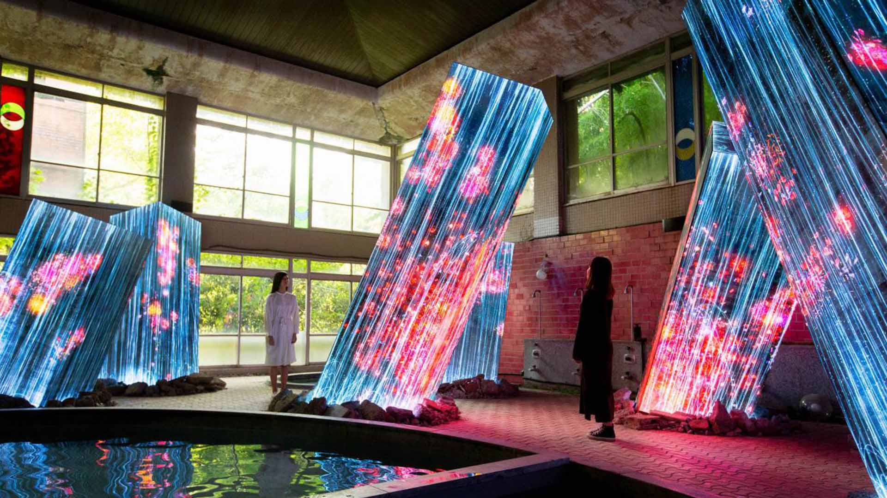

La Ruleta del Mérito
¿VALEMOS POR LO QUE SACAMOS O POR LO QUE SOMOS?
Contexto y Tesis
Dentro de la convivencia escolar en Colombia, se evidencian lógicas de meritocracia extrema.
Planteamiento (Tesis)
"El sistema de calificaciones actual fuerza un mercado competitivo donde el valor del estudiante se mide en números. Se requiere una intervención artística para defender la dignidad humana y la solidaridad."
Lógicas de Libre Mercado
- El valor de los estudiantes se reduce a su rendimiento numérico.
- Altos niveles de estrés y afectación a la salud mental.
- La competencia hace más complicada la solidaridad.
"¿Valemos por lo que sacamos o por lo que somos?"
Justificación
Un llamado urgente a la ética para restaurar la solidaridad comunitaria dentro de la institución.
El Valor de la Persona
Las clasificaciones no deben representar el valor humano:
- Cuestionamiento al sistema institucional competitivo.
- Un simple número jamás podrá representar quiénes somos.
- Restauración de la ética en el trato entre pares.
"La educación debe estar al servicio del hombre, no al revés."
Producto Propuesto
Una instalación artística envolvente e interactiva con componentes físicos y digitales.
La Jaula de Documentos
Un pupitre rodeado por una estructura opresiva:
- Documentos académicos colgados con hilos invisibles.
- Representación visual de la dependencia del estudiante hacia sus notas.
- Materiales: Pupitre, material escolar reciclado, documentos reales.
La Ruleta Física
"El azar físico que define tu valor numérico."
La ruleta girará y se detendrá en un número del 1 al 10, determinando la consecuencia social mostrada en la interfaz.

Pilares Teóricos
Fundamentado en la sociología del poder, la estética relacional y la doctrina social.
1. Capital Humano (Becker)
Crítica a la visión del estudiante como una inversión de productividad.
- La educación enfocada únicamente al rendimiento económico.
- La pérdida de la identidad individual frente al dato estadístico.
2. Poder Disciplinario (Foucault)
El Examen como herramienta que normaliza y clasifica al individuo.
- Vigilancia constante a través de la nota.
- El panóptico escolar: vigilancia sin ser visto.


3. Estética Relacional (Bourriaud)
La obra de arte como un "estado de encuentro".
- El espectador interactúa con la ruleta para volverse un sujeto reflexivo.
- El arte como alternativa a la competencia individualista.